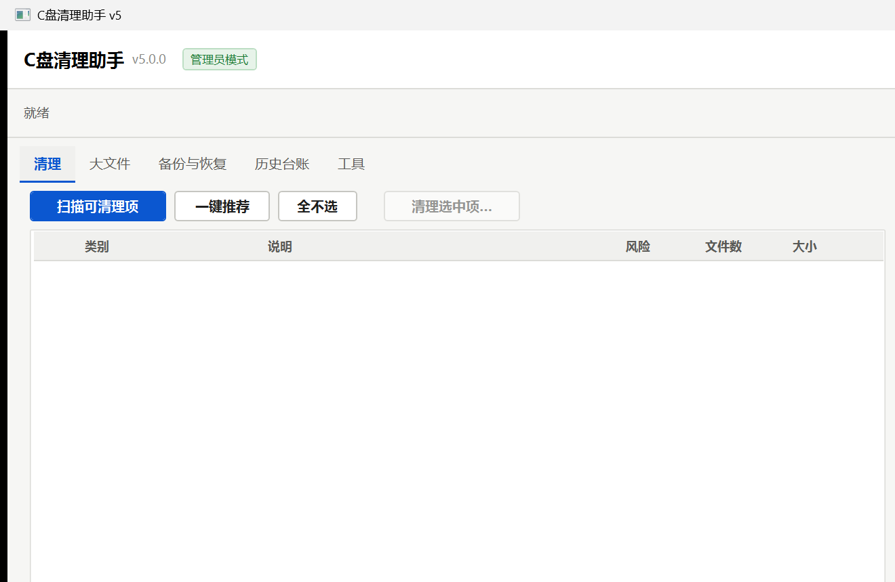

Acceptance Record
验证记录与验收清单
验收基线：8 条验收标准逐条对照，全部附证据（文件路径 + 实测数值）。截至 2026-09-16，全部通过。
01
总体状态
| 测试套件 | 结果 | 备注 |
|---|---|---|
| 内置自检 selftest | 8 / 8 通过 | 过滤器 / 精度 / 备份往返 / 长路径 / 台账 / 取消 |
| 规则在线更新专项 | 14 / 14 通过 | 含无效更新拒绝与回退 |
| 端到端验收 e2e | 11 / 11 通过 | 样本全流程 + 真机清理 + 台账导出 |
| 界面交互脚本（3 轮） | 全部通过 | 扫描→详情→确认框→取消→五页签 + 截图 |
| 性能基准 | 完成 | 扫描 7.2×、启动 3.3×、内存 -40% |
02
验收标准逐条对照
| # | 验收标准 | 证据 | 结论 |
|---|---|---|---|
| 1 | 扫描覆盖常见占用且不误报 | 31 类别 / 91,769 文件全量扫描；selftest 精确匹配 150 文件 / 200.0 KB（含排除与联接点）；与旧版独立测量交叉吻合（米哈游 4.83 GB、pnpm 2.16 GB 等）；安全过滤器拒绝 8 项 / 放行 4 项 | 通过 |
| 2 | 清理后空间释放经过实测验证 | 样本清空备份区后 C 盘 Δ = 3.58 MB vs 期望 3.59 MB（99.7%）；真机单次释放 736.9 MB（台账双数值）；E2E 11/11 | 通过 |
| 3 | 运行流畅不卡死 | 扫描 2.19 s；取消 127–134 ms 响应；冷启动 1.1 s；交互脚本 3 轮无冻结；40+ 次启停无崩溃 | 通过 |
| 4 | 删除前可预览可确认 | 确认对话框（数量/大小/风险/策略 + 警告）；默认勾选策略；高风险二次确认；文件级逐项排除 | 通过 |
| 5 | 误删可恢复 | 备份区往返：移动 3 → 恢复 3（大小逐位一致）→ 再次移入 → 清空；UI 恢复入口（三冲突策略） | 通过 |
| 6 | 清理台账可追溯 | JSONL 台账 + CSV/明细/HTML 导出实测（1,074 B / 4,702 B）；重启后读取 4 条记录不丢 | 通过 |
| 7 | 有对标优秀工具的落地清单 | 《能力对照清单》26 项（落地 18 / 部分 1 / 不采纳 7 均附理由）；点名三项全部落地 | 通过 |
| 8 | 可稳定交付与接手 | 自包含版部署 + 零依赖启动验证；异常场景（权限/占用/长路径）提示与日志；维护手册 + 交接清单 + 一键复测脚本 | 通过 |
03
测试轮次记录
| 轮次 | 内容 | 结果 | 证据 |
|---|---|---|---|
| R1 | 内置自检（首次） | 7/8 → 修复备份清空计数语义后 8/8 | Docs\data\selftest-run2.json |
| R2 | 规则在线更新（本地 HTTP 源） | 14/14 | Tests\test-rules-update.ps1（可复跑） |
| R3 | 端到端（修复 3 处脚本问题后） | 11/11 | Docs\data\e2e-report.json |
| R4 | 界面交互 ×3 轮 | 全过 | Docs\screenshots\ui-01~10*.png |
| R5 | 终版基准（口径统一） | 完成 | Docs\data\bench-final.json |
测试过程共发现并修复 7 处问题（含备份清空计数语义、CLI 参数顺序兼容、测试脚本编码与读取健壮性等），已全部回归通过。
04
关键实测数据
- 全量扫描：新版 2.19 s / 68.6 MB（旧版 15.86 s / 114.7 MB）
- 冷启动：新版 1105 ms（旧版 3610 ms）
- 取消响应 ≤ 130 ms；扫描 3 连跑文件数波动 ±0.02%
- 样本释放精度 99.7%；真机单次释放 736.9 MB


05
已知限制与边界
- 长路径文件（>260 字符）无法进入回收站，工具自动转入备份区（仍可恢复），已有测试覆盖；
- DISM 组件清理为系统进程，执行后不可取消，界面明确提示"5–15 分钟、请勿关闭"；
- 非管理员会话下系统级类别会被跳过并注明原因（预期降级）；
- 浏览器运行中清理缓存可能出现个别文件被占用，已提示"建议先关闭"；
- 一项可选加固测试（受控投放精度复测
Tests\measure-clean.ps1）因安全防护策略未获放行未执行，释放精度由样本级 99.7% 与真机台账双数值替代验证； - 重复文件扫描 / 注册表清理 / Treemap 等未纳入本期（理由见《能力对照清单》），不构成验收缺口。
06
复核指引（一键复跑）
# 规则与自检
tools\CleanMasterCli.exe rules-check
tools\CleanMasterCli.exe selftest
# 端到端（约 3 分钟；会实际清理样本与真机安全类别）
powershell -ExecutionPolicy Bypass -File Tests\e2e-clean-test.ps1
# 界面交互 + 截图（需要 GUI 会话）
powershell -ExecutionPolicy Bypass -File Tests\uitest.ps1
# 性能基准（新版 vs 旧版，需要旧版目录存在）
powershell -ExecutionPolicy Bypass -File Tests\bench-final.ps107
交付物清单
- 免安装程序：
C盘清理助手.exe（+tools\CleanMasterCli.exe） - 完整源码：
Source\（可dotnet build CleanMaster.sln -c Release） - 文档五份：
Docs\（HTML 阅读版 + Markdown 可编辑版） - 原始数据与截图：
Docs\data\、Docs\screenshots\ - 验收与维护脚本：
Tests\